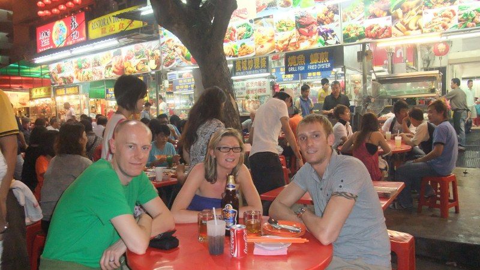
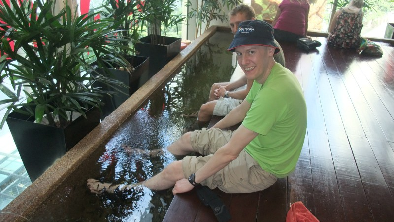
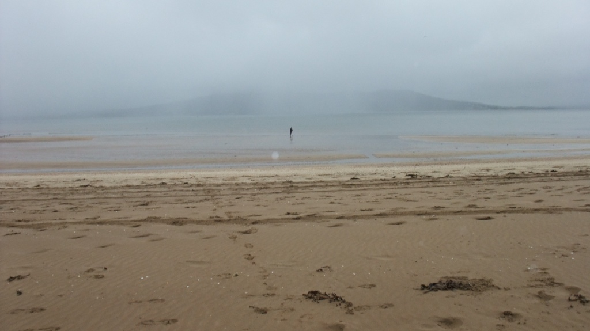
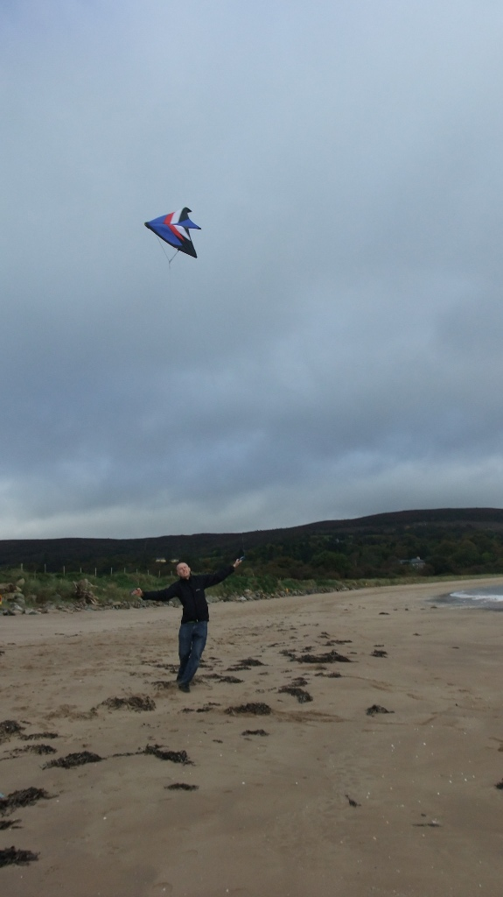
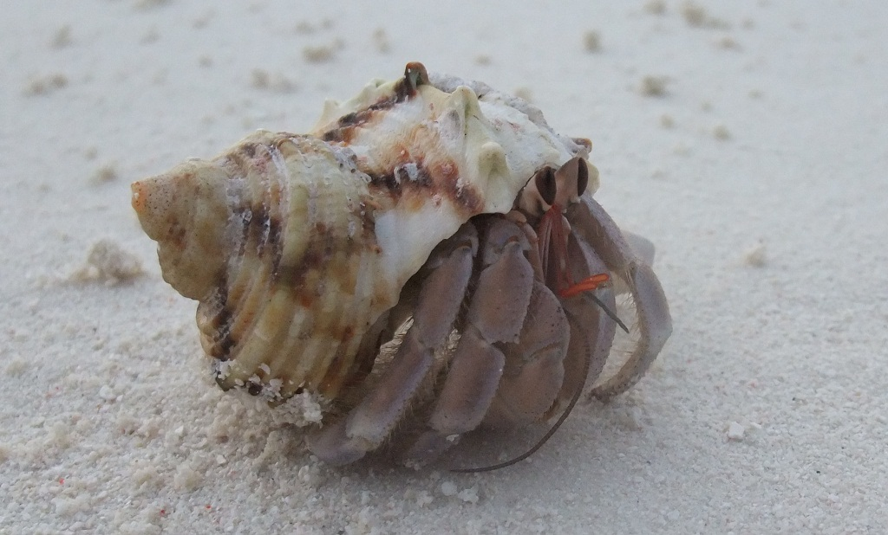
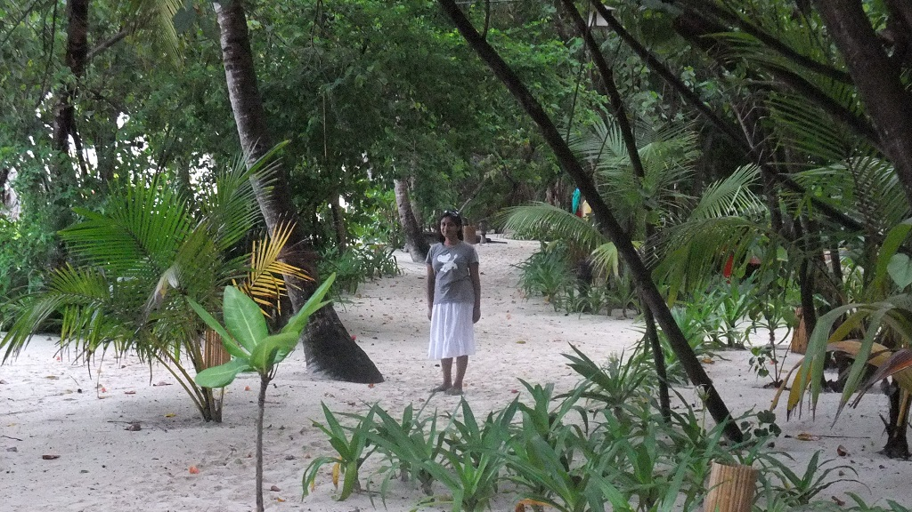
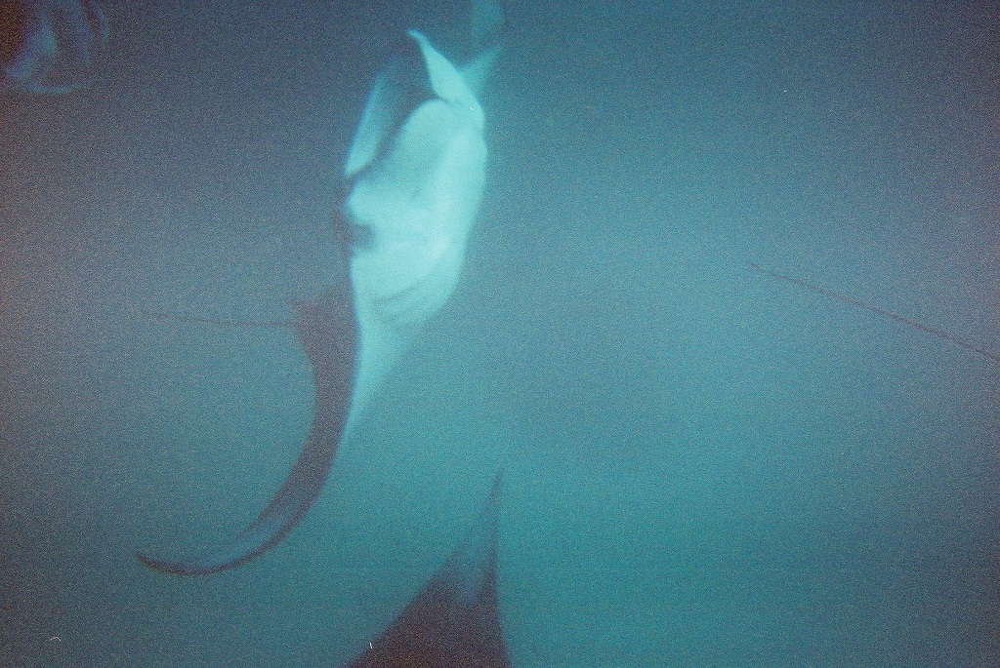
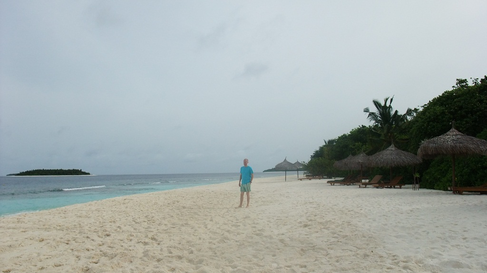

Heavy night so much time in bed. Then watched Twilight at Cinema in groovy electric operated sofa and had dinner at hawker stands.
Dinner at hawker stand
November 29th, 2009Fish Spa in Kuala Lumpur
November 28th, 2009
Apparently the fishes eat the dead skin off your feet.
Also visited Batu Caves today.
Rathmullan beach
October 1st, 2009
Kiting on beach in Rathmullan
September 28th, 2009
Maldives
July 11th, 2009Another very hot day. Did some snorkelling and saw a moray hiding in a rock. Identified red tooth trigger fish, powderline surgeonfish, lined surgeonfish, spotted unicorn fish, sixline wrasse.
Lunched at moodhu bar/restaurant - had a seafood pizza.
Checked out at 3pm, 3:45pm was our seaplane to Male.
Maldives
July 10th, 2009Warm stones massage at 10am. Highlights - head massage with both hands and chin plus a bum massage.
Went snorkeling! Saw an octopus, clown trigger fish.
Went snorkeling with doctor for an hour (Yamini set me up with the doctor when she went to get her toenail removed). Water was quite cloudy with plankton. Severely burnt my back!
At 6pm went for sunset boat trip to a nearby deserted island.

Maldives
July 9th, 2009A sunny day largely spent snorkeling.
Joined the 11:00 am snorkel group (as Yamini not snorkeling and company is nice). Then went snorkeling alone. Took Yamini out at low tide which was a mistake. She came out with several cuts and lost a toe nail. Went out on my own a few times, saw parrot fish and quite a large jelly fish.

Maldives
July 8th, 2009Very wet morning. Got up late and missed breakfast.
Had breakfast at Moodhu.
Did some reading.
Went on a snorkelling adventure by boat to Manta Point at 2:30pm
Got back at 6pm. All leapt off boat and swam along a reef near another island where we saw lots of turtles.
At Manta Point saw lots of mantas which were swimming in a circle around us, they seemed very interested in us and came very close. The mantas were huge, approx 3m from tip to tail. This was a truly amazing experience.

Maldives
July 7th, 2009Really hot morning.
Joined snorkelling group again at 11:00.
Spent the day snorkelling or reading in the sun.
Had a game of badminton at 5pm.
Maldives
July 6th, 2009Went snorkelling with beginners group at 11-12. My first snorkelling experience. Yamini turned back as she could not get used to breathing through the snorkel.
At edge of reef it is like looking over the edge of a cliff, the drop is to a depth of about 20metres. A large variety of tropical fish to be seen.
At the edge of the reef is quite a current that pushes you along the shore.
Rest of day spent sunbathing and reading.
Had a game of badminton and played scrabble at the bar.
Tex mex dinner.
